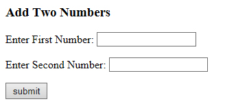
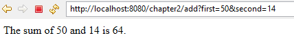

2.3 Handling HTTP GET Requests
HTML forms provide a user interface to collect data from the user and submit the data to a servlet or other server-side program for processing. For example look at the following form that shows a simple form with two text fields:

HTML code for the above form is:
<html>
<head>
<title>Add Two numbers</title>
</head>
<body>
<h3>Add Two Numbers</h3>
<form action='add'>
<p>Enter First Number: <input type="text" name='first'></p>
<p>Enter Second Number: <input type="text" name='second'></p>
<p><input type='submit' value='submit'></p>
</form>
</body>
</html>In above code observe the line <form action = 'add'>. The action attribute defines where the data gets sent. On submitting this form, form-data will be sent to a servlet whose url is mapped with it. Also note that one text field has a name of first and the other has a name of second.
Now, suppose that we enter 10 in the first textfield and 15 in the second textfield, and click the "Submit" button, we will get a "404 page not found" error (because we have yet to write the servlet). BUT observe the destination URL:
http://localhost:8080/chapter2/add?first=10&second=15
Observe that:
- The URL http://localhost:8080/chapter2/add is retrieved from the attribute action="add" of the <form> start-tag.
- A '?' follows the URL, which separates the URL and called query string.Notice the "query string" ?first=10&second=15. This part contains two parameters with parameter values:
first=10
second=15
You can access these parameters from the HttpRequest object using getParameter method as shown in following code:
String a = request.getParameter("first");
String b = request.getParameter("second");
Writing a Servlet to Process Form Data
When user submits an HTML form that does not specify method parameter for the form tag or explicitly specifies the GET method, the doGet() method is invoked. To process HTTP GET requests that are sent to the servlet, override the doGet( ) method.
Look at the following servlet code:
package testPackage;
import java.io.*;
import javax.servlet.*;
import javax.servlet.annotation.*;
import javax.servlet.http.*;
@WebServlet("/add")
public class AddNumber extends HttpServlet
{
protected void doGet(HttpServletRequest request,
HttpServletResponse response)
throws ServletException, IOException
{
String a = request.getParameter("first");
String b = request.getParameter("second");
int sum = Integer.parseInt(a) + Integer.parseInt(b);
response.setContentType("text/html");
PrintWriter out = response.getWriter();
out.println("<html><head><title>Add</title></head><body>");
out.println("<p>The sum of " + a + " and " + b
+ " is " + sum + ".</p>");
out.println("</body></html>");
}
}Now start the server and open HTML form in the browser, type data in textfields for example 50 and 14 and click on submit button. The form-data will be sent to the servelet and output will look like this:

Checking null or empty string
It might be possible that user does not supply data in text fields and click on submit button or user enters an empty string " ". In this case, our servlet should open HTML form again. We can do this by the following code:
if( a == null || a.trim().length() == 0 || b == null
|| b.trim().length() == 0 )
{
response.sendRedirect( "addform.html" );
return;
}The sendRedirect() method transfers control and open the URL specified. Now here is the complete program after adding validation codes:
package testPackage;
import java.io.*;
import javax.servlet.*;
import javax.servlet.annotation.*;
import javax.servlet.http.*;
@WebServlet("/add")
public class AddNumber extends HttpServlet
{
protected void doGet(HttpServletRequest request,
HttpServletResponse response)
throws ServletException, IOException
{
String a = request.getParameter("first");
String b = request.getParameter("second");
if( a == null || a.trim().length() == 0 || b == null
|| b.trim().length() == 0 )
{
response.sendRedirect( "addform.html" );
return;
}
int sum = Integer.parseInt(a) + Integer.parseInt(b);
response.setContentType("text/html");
PrintWriter out = response.getWriter();
out.println("<html><head><title>Add</title></head><body>");
out.println("<p>The sum of " + a + " and " + b
+ " is " + sum + ".</p>");
out.println("</body></html>");
}
}